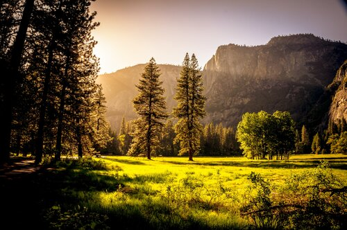
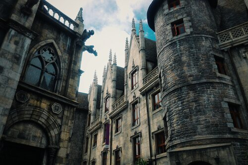

Novel Research
A writer's waystation to obtaining authentic information for real world influences.
Novel Research is a place designed for writers to find the core research useful for any story. It's designed to introduce the basic overview of real world subjects, such as climates and architecture, involved in world building while providing connections to further resources. With Novel Research, a writer may find either precisely the overview they seek, or the network to deeper detail of the subject matter. In addition, Novel Research promises the continual addition of further topics.
Climates
Including the five major climates: Tropical, Dry, Temperate, Continental, and Polar.

Architectural Styles
Including five maojr styles: Classical, Gothic, Baroque, Neoclassical, and Victorian.
